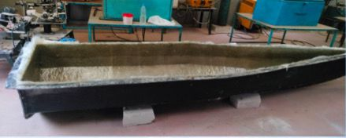
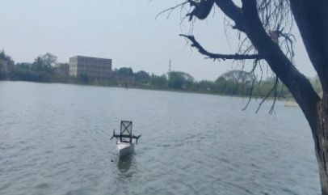

Defence Capabilities

AI Navigation
Intelligent pathfinding & obstacle avoidance using real-time AI.

Swarm Coordination
Multiple USVs operate in synchrony for strategic advantage.

Live Surveillance
High-definition real-time monitoring of target zones.

Precision Strike
Autonomous target locking and low-collateral execution.
Defence USV Visuals

